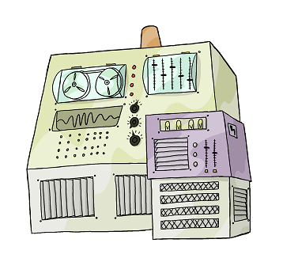
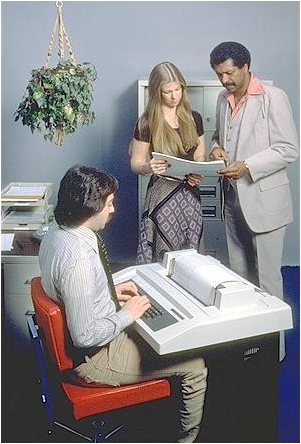
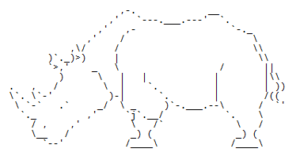

Introduction
Version 4.0

|  |
|
|
|
|||
|  |
|
|
|  | ||
CLUI: command-line user interface
|
user logs in user types command computer executes command and prints output user types another command computer executes command and prints output ⋮ user logs off |
||||
| ↕ | ||||
| shell | ||||
| ↕ | ||||
- A shell is just a program that runs other programs
- Most popular is bash (the Bourne again shell)
- Using it feels a lot more like programming
- than using windows, a mouse, etc.
- Commands are terse and often cryptic
- Use it because:
- many tools only have command-line interfaces
- allows you to combine tools in powerful new ways